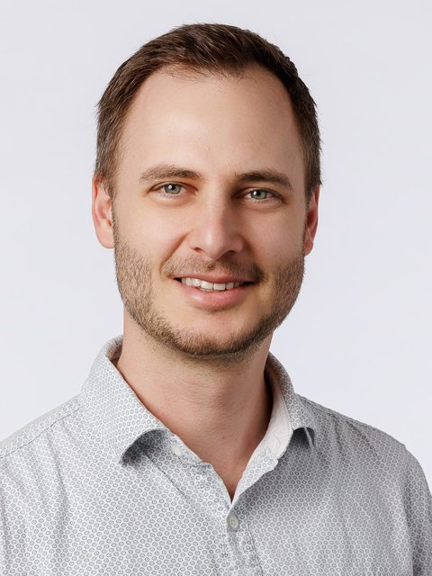

Talks & Workshops
Learn from the people shaping the field. Talks and hands-on workshops across technical AI safety, governance, entrepreneurship and careers.
7–8 November 2026 • ETH Zurich
Whether it's your first or your fifth, the next step in your AI safety career is here.
One day at ETH Zurich. More than 350 applications. New collaborations, new careers, and an event attendees rated among the best uses of their time. Here is what happened when Europe's AI safety community first met in Zurich.
This year, the event doubles to two full days. The full program lands later this year. Three things are already certain:
Learn from the people shaping the field. Talks and hands-on workshops across technical AI safety, governance, entrepreneurship and careers.
Meet the organizations working on AI safety, face to face. The 2025 edition led directly to new roles and collaborations across the ecosystem. Yours could be next.
Skip the small talk. Structured 1-1s, speed networking, and roundtables built to get you the connections that matter.
Updated every week

Distinguished Professor of Computer Science, UC Berkeley · Director, Center for Human-Compatible AI
Co-author of Artificial Intelligence: A Modern Approach, the standard AI textbook used in over 1,500 universities across 135 countries, and a Fellow of the Royal Society. One of the field's leading voices on keeping advanced AI under human control, a case he makes in his book Human Compatible and his 2021 BBC Reith Lectures.
Managing Director, Cantellus Group
Susan Nesbitt is Managing Director at Cantellus Group, where she advises governments, technology companies, and organizations on the strategy, governance, and responsible deployment of agentic AI systems, helping leaders move from experimentation to enterprise adoption. She serves on IASEAI's Policy Committee, is a member of OpenAI's External Red Teaming Network, advises AI Safety Connect, and contributes to international initiatives with UNESCO on AI governance and the ethical use of AI. Previously, Susan led Global Social Impact Products & Partnerships at WhatsApp and held leadership roles at the World Economic Forum.

Principal Investigator, Oxford Witt Lab, University of Oxford
Royal Academy of Engineering Research Fellow
Defined the field of multi-agent security, addressing worst-case guarantees in agentic systems. His earlier work with Sam Sokota solved a 25-year-old problem in information security, perfectly secure steganography, named a 2023 Biggest Discovery in Computer Science by Quanta Magazine. He also helped pioneer deep multi-agent reinforcement learning.

Programme Director, ARIA
Co-founder, Principles of Intelligence
Runs Safeguarded AI, a roughly £60M ARIA programme building a mathematical assurance toolkit that lets fleets of AI agents produce formally verified artefacts at speed and scale, from software to microelectronics to cyber-physical control systems. Co-author of Gradual Disempowerment, and previously a Research Manager at Oxford's Future of Humanity Institute.

Lead, Gemini Safety Post-Training, Google DeepMind
Dr. Adrian Hutter leads the Gemini safety post-training team at Google DeepMind. His current research centers on instilling robust values in AI models across diverse environments. He has a background in theoretical quantum physics and has been interested in how to ensure the development of AGI is broadly beneficial for over a decade.
Updated every week
Neutral ground for a global challenge.
Switzerland's tradition of diplomacy makes it a natural intermediary among the world's leading AI powers. Zurich adds Europe's densest AI talent pool, ETH, and offices of 7 of the world's 10 leading AI companies, including Google, Meta, Microsoft, and Anthropic.


We return to the main building of ETH Zurich, one of the world's leading universities for science and technology. 21 Nobel laureates walked these halls, Albert Einstein among them. In November 2026, it's your turn.
Places are limited, so attendance is by application. We review applications on a rolling basis and send decisions throughout, so applying early gives you the best chance of a place.
If you are accepted, we will invite you to pay for your ticket to secure your spot.